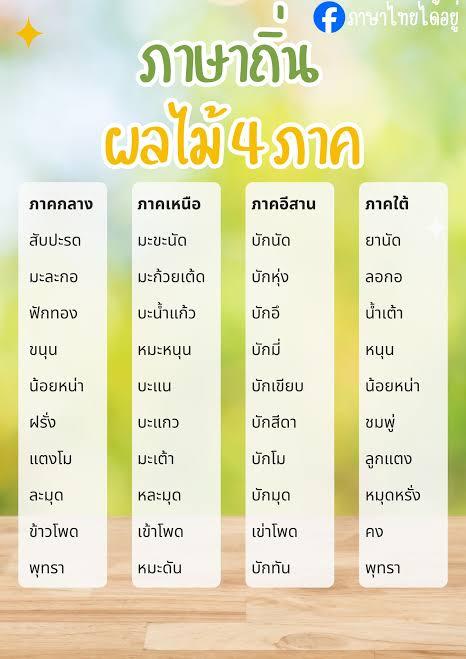

วิชาภาษาไทย

"พระอภัยมณี" เป็นวรรณคดีคำกลอนชิ้นเอกของสุนทรภู่ กวีเอกแห่งกรุงรัตนโกสินทร์ เล่าเรื่องราวของเจ้าชายพระอภัยมณีผู้มีความสามารถพิเศษด้านการเป่าปี่จนมีเสน่ห์ต่อผู้ฟัง เนื้อเรื่องผสมผสานจินตนาการอันกว้างไกล ทั้งนางยักษ์ผีเสื้อสมุทร เงือกน้อย และการเดินทางผ่านดินแดนต่าง ๆ ที่เต็มไปด้วยเหตุการณ์พิศวง สุนทรภู่ใช้กลอนแปดที่มีความไพเราะและเข้าถึงง่าย ทำให้วรรณคดีเรื่องนี้เป็นที่นิยมในหมู่คนทุกชนชั้น ไม่จำกัดเฉพาะในราชสำนัก ปัจจุบันตัวละครและสถานที่ในเรื่อง เช่น เกาะเงือก และผีเสื้อสมุทร ยังถูกนำไปใช้อ้างอิงในสื่อและงานศิลปะไทยร่วมสมัยอยู่เสมอ